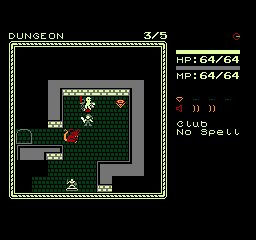
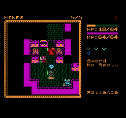
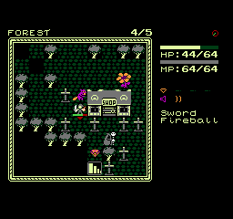

We are Hejickle
A roguelike for the NES in 64K.



The goal is to progress through the floors by walking onto exits. Killing enemies is optional, but often a necessity as you can't take the stairs when an enemy is adjacent to you. Along the way, you'll collect gems which can be used to purchase items in shops.
- D-Pad moves. Bump into enemies to attack.
- Start button is your inventory and ability screen.
- Hit select to examine things. This is kinda like an in-game help, and can be used almost anywhere including menus.
- A button casts spells, assuming you have one.
- B button is multi-purpose. Press and release it to wait a turn. Hold B down and press select to change weapons, press A to change spells, and press the D-Pad to change your facing direction.